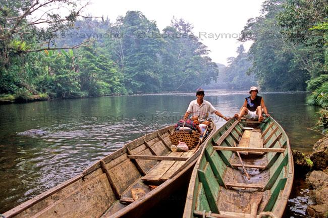

North Kalimantan
Kayan River
• The Kayan River flows from the Apokayan Highlands in the South West corner of the province to the coastal capital city Tanjung Selor, and is the longest river of North Kalimantan, cruising upstream the Kayan River is particly possible till the Naha Gamang Rapid, from here it is not possible to navigate the Kayan River further usptream, as the twelve dangerous rapids of minus six at world scale isolate the Apokayan Region from the coastal line. For the one with adventures spirit has to navigate the Bahau River into the Kayan Mentarang if the water level allow, from here jungle treks of more then a week can lead you to the Krayan or Apokayan Highland plateau 's. Malinau along the Sesayap River in the wetland swamp forest can lead you to the Sembakung Reserve in the North Top or the Krayan Region of Kayan Mentarang 's heart of Borneo along the Sabah border, reaching these regions can't be without days of jungle treks through virgin unhabitat mountain range. Setulang Region along the border with Kayan Mentarang National Park, is the most easiest Jungle region to reach, with the ethnic Punan, Kayan and Kenyah Dayak Tribes, living in the forest from hunting, and traditional spriritual believes.
Tarakan City
• Tarakan the small island at the north east corner of the province, and the gateway of North Kalimantan province, for transit to the remote jungle at the main land, has several tourism attractions as the mangrove forest with probiscis monkeys in the center of the town, a historical world war II -museum, and historical buildings of the Japanese and Dutch colonial period, spread over the island, from flight strips with hangars, bunkers, hospital to monuments.